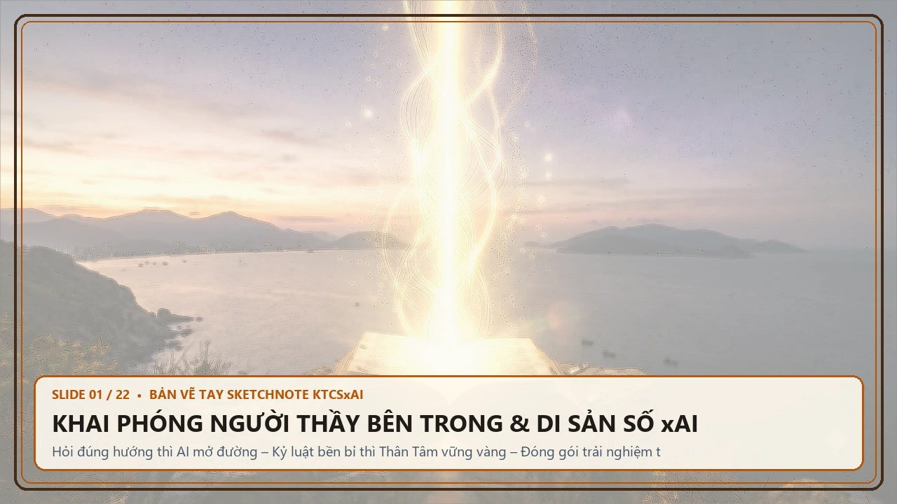

🐢 Tốc Độ:
▶ YouTube VN
youtu.be/...
📋 Copy Link
🏛️ KIẾN TẠO CUỘC SỐNG xAI • TRANG 1 / 22
Phím: ← → Space
Kiến Tạo Cuộc Sống xAI: Nền Tảng Giá Trị và Di Sản Vĩnh Cửu
↕
Kéo dọc mở rộng / thu hẹp
🔄 THẺ BÀI LẬT 3D CHUYỂN HÓA (TRƯỚC → TRỞ THÀNH)
🎙️ KỊCH BẢN LỜI GIẢNG (NÃO TRÁI & NÃO PHẢI)
↕
Kéo dọc mở rộng kịch bản